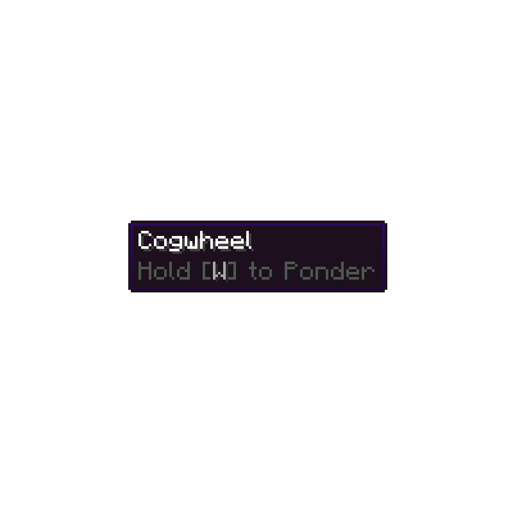

Create mod can be played in modpacks or as a single mod, but with the possibilities of the recipes being very different between versions or being changed between modpacks, I recommend using JEI (Just Enough Items) or REI (Roughly Enough Items) as they both allow for the quick and easy browsing of items and their recipes, as well as allowing you to preview what they do (Which is already part of create) without having the item yet (Which was not a part of create). It also has an incredible recipe preview menu.
Create is entirely based around decoration , automation , and freedom of expression . Unlike other tech mods, such as AE2 where all automation solutions are one block machines, Create us based around multi block networks of customizable machinery , allowing for a more customizable and unique experience. Create mod is truly the best mod for the creative and technical mind of minecraft players.
Create mod has many wonderful menus , but one that provials for beginners is the menu for explaining specific blocks and machines , defining their purpose and how to use them. To enter it, simply hover over the item in your inventory and hold "W" or use JEI/REI to search it up and hover over it, holding "W" while doing so until the menu pops up. This feature can be used for any block in the entirety of create , allowing for a simple and clean learning curve where you do not have to google videos on certain blocks.

Stress units (SU) are a
measurement of power
used for machines. Contrary to popular belief, Stress Units (SU) and Rotations
Per Minute (RPM)
are separate
, they are two different things. For example, a small and a large waterwheel. A
small waterwheel spins at 8rpm with 256su, but a large water wheel spins at 4rpm
at 512su, but
they are not the same
. Stress units are a unit of power that is used to power machines, while
RPM simply changes how fast the machines work.
Stress units are used in
proportion
to the
"Kinetic Stress Impact"
. The
KSI
is a measurement of
how many stress units a machine uses
, and can be 2x RPM, 4x RPM and 8x RPM. This number is know as
the impact value
. An impact value of 2x RPM such as an encased fan, will use 2x stress units
equal to 2x the input RPM. For example, A mechanical drill which operates at 4x
RPM put onto a system with 64 RPM would use 256 stress units as 64 x 4 is 256.
RPM, Unlike Stress Units, which are completely separate, are a measurement of how fast a machine attached to that system will move . RPM, unlike Stress Units, can be scaled using things such as gear ratios, where a small and a large cogwheel are used in conjunction to generate more RPM while keeping the same SU , but this can also be done with a rotation speed controller . . For example, a small waterwheel produces 256su at 8rpm, and a large water wheel produces 512su at 4rpm are not the same, although it might seem like they are. RPM can always be changed using gear ratios such as the one seen below.
With create mod, you can
build anything you want
, from an incredible factory to a simple house elevator,
Create Mod really has it all
. Create mod also has many tools and items that
make building smooth
, such as the
wrench
. The wrench is a tool that is key to almost any playthrough of create, and it
allows you to
rotate the blocks and machines you place
that are from create, but it also allows you to
pick up create machinery blocks
by shift clicking them, allowing for a very quick and clean way to move or
bulldoze machines.
Another create Item that is very useful for building is the
Toolbox
. A toolbox effectively acts as a
pocket wormhole
for
up to 8 items
.
When nearby
a toolbox, a player can press their toolbox keybind: by default, this is 'Left
Alt' and it will open a somewhat circular menu, with 8 slots
storing a "Large Amount" (Even more than 64!)
of each item for it to be quickly withdrawn, although the player must have put
the items in before hand. It can also
be picked up
, and still retains its contents while in the inventory.